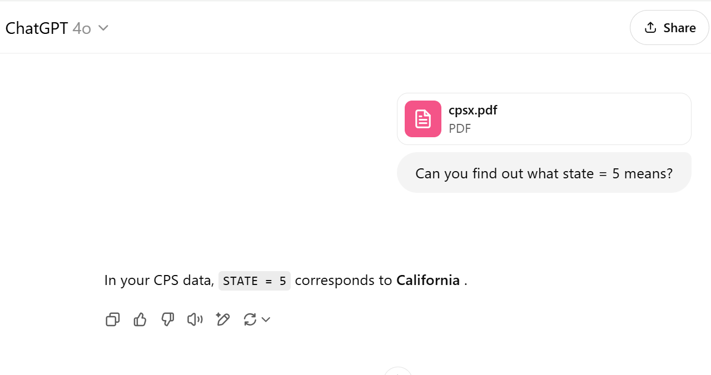
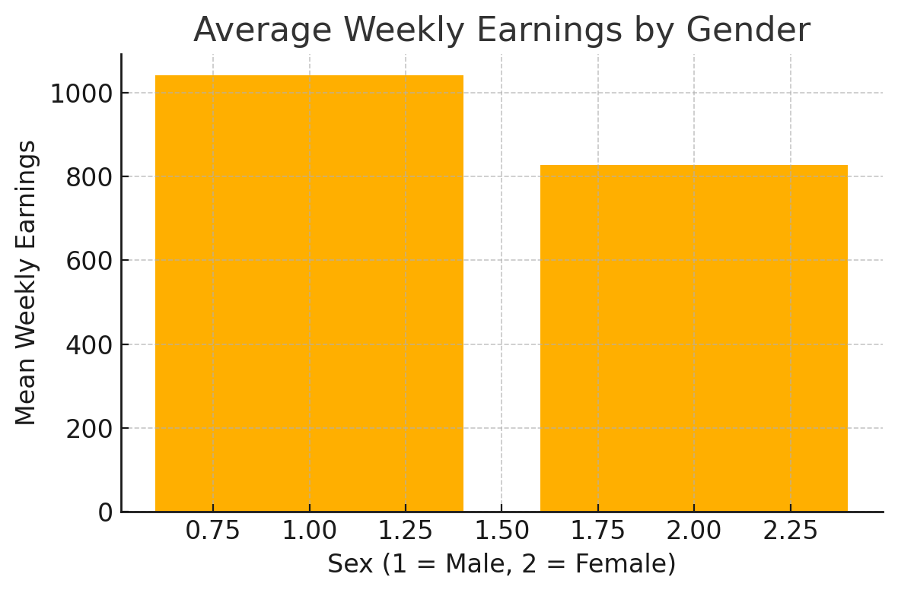
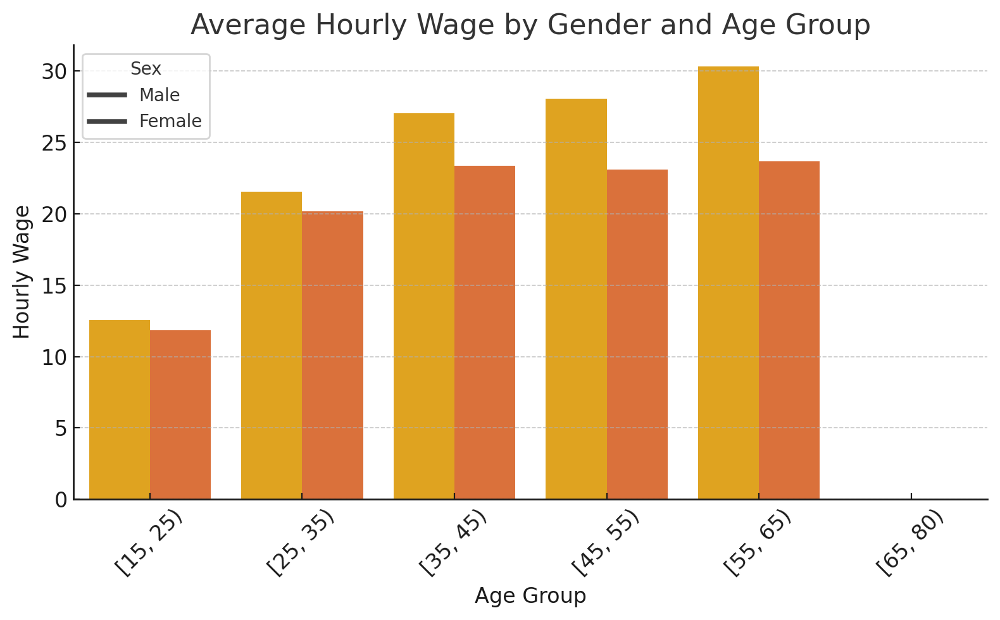
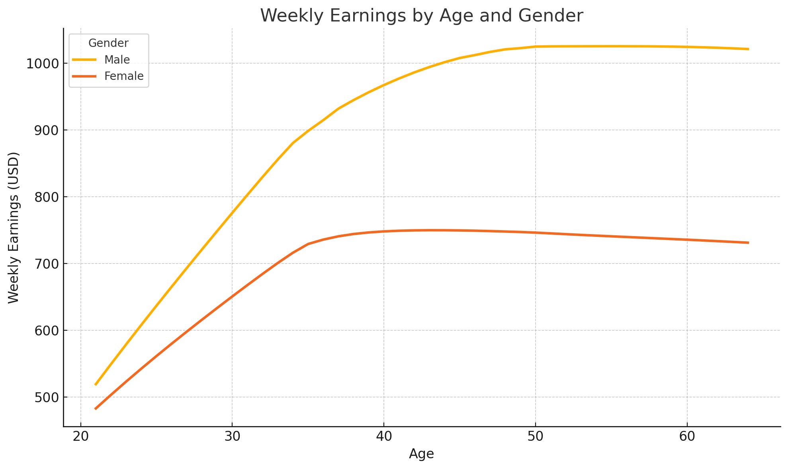
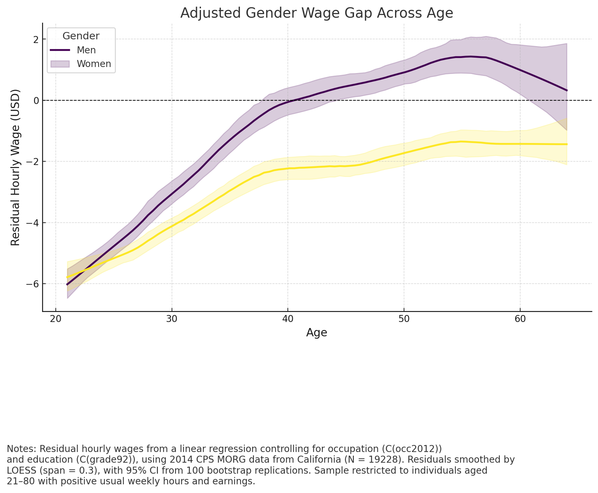
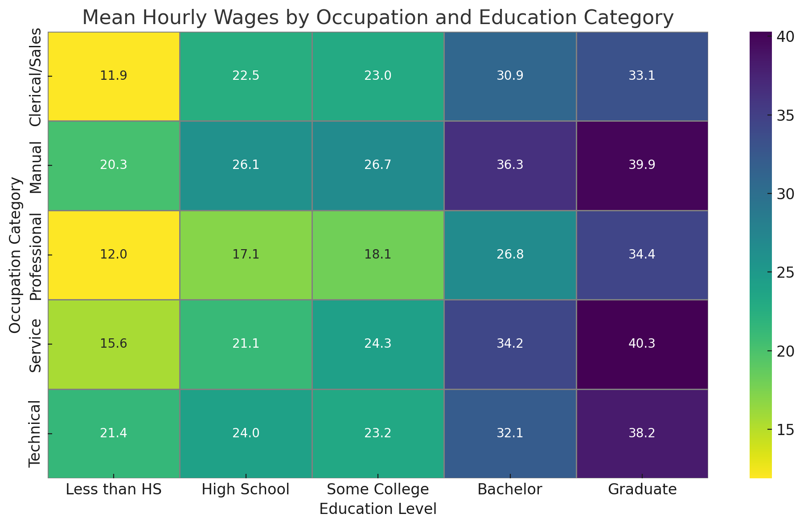

Creating Graphs
An example
The task
Is there a difference between how much men and women make? How does it vary by age?
The topic is related to the case study on gender gap in earnings.
Preparation
As a case study, consider the earnings case study from the Data Analysis textbook
- Have a look at the info readme
- Download
morg-2014-emp.csvfrom earnings data - Download cpsx.pdf, which is an old school codebook
- read in morg-2014-emp.csv
One state
Let us start filtering on the largest state
1. Create an ordered freq table of state, and filter on the largest oneI used RStudio with Github copilot to write all three code snippets. It automatically guessed the third bit.
```{r}
# setup
library(tidyverse)
# ordered freq table of state
morg %>%
group_by(state) %>%
summarise(n = n()) %>%
arrange(desc(n)) %>%
mutate(state = fct_reorder(state, n)) %>%
ggplot(aes(x = state, y = n)) +
geom_col() +
coord_flip() +
labs(title = "Number of Employees by State in Morg",
x = "State",
y = "Number of Employees") +
theme_minimal()
# find the largest state in terms of number of obs
state_max=morg %>%
group_by(state) %>%
summarise(n = n()) %>%
arrange(desc(n)) %>%
slice(1) %>%
pull(state)
# filter morg for the largest state
morg_largest_state <- morg %>%
filter(state == state_max)
```Hold, what is does max state=5 mean? Ask ChatGPT.

Save this file as morg-2014-emp-state5.csv. You can find it also at the data section here
Get to know the file
- Upload the file and ask for a variable dictionary. After 2 iterations, I used this.
Create a variable dictionary. Use the pdf i shared earlier. Output as markdown. For each variable: varname, labels, type, coverage (% missing), mean and mode. Round up numbers. Look at cps and provide short labels. Get me an .md I can download.
- ChatGPT created a table, yes.
- But look at what Claude did, amazing.
Let us do graphs
First try
Is there a gender gap in earnings? Show me a graph.ChatGPT will run Data Analysis – create a short Python script and display a graph.
```{python}
import matplotlib.pyplot as plt
# Check for gender and earnings columns
if "sex" in df.columns and "earnwke" in df.columns:
# Drop rows with missing or zero earnings
df_filtered = df[(df["earnwke"].notna()) & (df["earnwke"] > 0)]
# Group by sex and calculate mean earnings
gender_earnings = df_filtered.groupby("sex")["earnwke"].mean().reset_index()
gender_earnings["earnwke"] = gender_earnings["earnwke"].round(2)
# Create a bar plot
plt.figure(figsize=(6, 4))
plt.bar(gender_earnings["sex"], gender_earnings["earnwke"])
plt.title("Average Weekly Earnings by Gender")
plt.xlabel("Sex (1 = Male, 2 = Female)")
plt.ylabel("Mean Weekly Earnings")
plt.grid(axis="y", linestyle="--", alpha=0.7)
plt.tight_layout()
plt.show()
else:
raise ValueError("Required columns 'sex' and 'earnwke' not found in dataset.")
```Here is the chart
 Followed by this text “Here is the graph showing the gender gap in weekly earnings. Males (1) earn more on average than females (2) in this sample. Let me know if you want to adjust for hours worked or other covariates.”
Yes, adjust by age.
Now what? By now, you have some idea, what you’d like. For me it was
Maybe binscatter by year, start 21. fit loess for makes and femalesTry it!
For me, it turns out it needed some adjustments after several iterations to get this. Add CI. Add Footnote. Increase FN font size. Add N of obs. Change color scheme.
```{python}
import matplotlib.cm as cm
from matplotlib.colors import to_hex
# Get viridis colors
viridis = cm.get_cmap("viridis", 2)
color_male = to_hex(viridis(0.1))
color_female = to_hex(viridis(0.8))
# Count observations
n_obs = len(reg_data)
# Updated footnote
footnote = (
f"Notes: Residual hourly wages from a linear regression controlling for occupation (C(occ2012))\n"
f"and education (C(grade92)), using 2014 CPS MORG data from California (N = {n_obs}). Residuals smoothed by\n"
f"LOESS (span = 0.3), with 95% CI from 100 bootstrap replications. Sample restricted to individuals aged\n"
f"21–80 with positive usual weekly hours and earnings."
)
# Plot
plt.figure(figsize=(9, 6))
plt.plot(x_m, y_m, label="Men", color=color_male, linewidth=2)
plt.fill_between(x_m, l_m, u_m, color=color_male, alpha=0.2)
plt.plot(x_f, y_f, label="Women", color=color_female, linewidth=2)
plt.fill_between(x_f, l_f, u_f, color=color_female, alpha=0.2)
plt.axhline(0, color="black", linestyle="--", linewidth=0.8)
plt.title("Adjusted Gender Wage Gap Across Age", fontsize=15)
plt.xlabel("Age", fontsize=12)
plt.ylabel("Residual Hourly Wage (USD)", fontsize=12)
plt.xticks(fontsize=10)
plt.yticks(fontsize=10)
plt.grid(True, linestyle="--", alpha=0.5)
plt.legend(title="Gender", labels=["Men", "Women"], fontsize=10, title_fontsize=11)
# Updated footnote with larger font
plt.figtext(0.01, -0.12, footnote, fontsize=10, ha="left", va="top")
plt.tight_layout(rect=[0, 0.12, 1, 1])
plt.savefig("/mnt/data/gender_wage_gap_viridis_residuals.png", dpi=300, bbox_inches="tight")
plt.show()
```It took some iterations, starting with

To get to something I liked. It made errors, forgot labels, and made coding errors. Check the process.

```{python}
import statsmodels.api as sm
from sklearn.utils import resample
# Restrict and prepare data for regression
reg_data = df[
['age', 'earnwke', 'uhours', 'sex', 'grade92', 'occ2012']
].dropna()
reg_data = reg_data[
(reg_data['age'] >= 21) & (reg_data['age'] <= 62) &
(reg_data['uhours'] > 0) & (reg_data['earnwke'] > 0)
].copy()
# Compute hourly wage
reg_data['hourly'] = reg_data['earnwke'] / reg_data['uhours']
# Residualize hourly wage on occ and grade
X = pd.get_dummies(reg_data[['grade92', 'occ2012']].astype("category"), drop_first=True)
X = sm.add_constant(X)
model = sm.OLS(reg_data['hourly'], X).fit()
reg_data['resid'] = model.resid
reg_data['gender'] = reg_data['sex'].map({1: 'Male', 2: 'Female'})
# Define bootstrap function
def bootstrap_loess(data, gender, x_col, y_col, span=0.3, n_boot=100):
from statsmodels.nonparametric.smoothers_lowess import lowess
subset = data[data['gender'] == gender]
x_vals = np.linspace(21, 80, 60)
y_boot = np.zeros((n_boot, len(x_vals)))
for i in range(n_boot):
boot_sample = resample(subset)
smoothed = lowess(boot_sample[y_col], boot_sample[x_col], frac=span, return_sorted=True)
y_interp = np.interp(x_vals, smoothed[:, 0], smoothed[:, 1])
y_boot[i, :] = y_interp
y_mean = y_boot.mean(axis=0)
y_low = np.percentile(y_boot, 2.5, axis=0)
y_high = np.percentile(y_boot, 97.5, axis=0)
return x_vals, y_mean, y_low, y_high
# Run bootstrap LOESS for both genders
x_m, y_m, l_m, u_m = bootstrap_loess(reg_data, 'Male', 'age', 'resid')
x_f, y_f, l_f, u_f = bootstrap_loess(reg_data, 'Female', 'age', 'resid')
# Colors and footnote
import matplotlib.cm as cm
from matplotlib.colors import to_hex
viridis = cm.get_cmap("viridis", 2)
color_male = to_hex(viridis(0.1))
color_female = to_hex(viridis(0.8))
n_obs = len(reg_data)
footnote = (
f"Notes: Residual hourly wages from a linear regression controlling for occupation (C(occ2012))\n"
f"and education (C(grade92)), using 2014 CPS MORG data from California (N = {n_obs}). Residuals smoothed by\n"
f"LOESS (span = 0.3), with 95% CI from 100 bootstrap replications. Sample restricted to individuals aged\n"
f"21–80 with positive usual weekly hours and earnings."
)
# Plot
plt.figure(figsize=(9, 6))
plt.plot(x_m, y_m, label="Men", color=color_male, linewidth=2)
plt.fill_between(x_m, l_m, u_m, color=color_male, alpha=0.2)
plt.plot(x_f, y_f, label="Women", color=color_female, linewidth=2)
plt.fill_between(x_f, l_f, u_f, color=color_female, alpha=0.2)
plt.axhline(0, color="black", linestyle="--", linewidth=0.8)
plt.title("Adjusted Gender Wage Gap Across Age", fontsize=15)
plt.xlabel("Age", fontsize=12)
plt.ylabel("Residual Hourly Wage (USD)", fontsize=12)
plt.xticks(fontsize=10)
plt.yticks(fontsize=10)
plt.grid(True, linestyle="--", alpha=0.5)
plt.legend(title="Gender", labels=["Men", "Women"], fontsize=10, title_fontsize=11)
plt.figtext(0.01, -0.12, footnote, fontsize=10, ha="left", va="top")
plt.tight_layout(rect=[0, 0.12, 1, 1])
plt.savefig("/mnt/data/gender_wage_gap_viridis_residuals.png", dpi=300, bbox_inches="tight")
plt.show()
```Final thoughts
While AI is great, it needed some iterations to get what I want not just something.
Oh, and you can go further. Think about this graph. Is the econonometrics of it okay?
Heatmap
Ok now show a heatmap of hourly wages by occupation and education level. Keep viridis. Not great
Create a few distinct categories of occupation.
Then create bins for education.Almost
Swap colorsNow we are talking:

Other ideas
Many other options. Two extremes.
- Describe age. In a graph. (Hint: think about binsize)
- Create an interesting and well-done scatterplot (turn o3 on or use Claude Sonnet)
Discussion points
Think about this for each iterations.
- Is the code correct
- What do we like and dislike in this graph? Look carefully on all aspects. How would you change it?
- Go through the process and improve each graph to presenation quality.
Bonus
You made it till the end. Your bonus track is California Love